Resumo da viagem
Um loop anti-horário a partir de Windhoek que desce ao sul profundo (Kalahari, Fish River Canyon, Kolmanskop), sobe a costa dos ventos (Lüderitz → Sossusvlei → Swakopmund → Cape Cross), entra no granito e na pré-história (Spitzkoppe, Twyfelfontein), faz duas noites em Etosha e uma no Waterberg, e fecha perto de Windhoek. Desenhado para três adultos que querem luz dourada, silêncio, gravel infinito e céu escuro — com uma cidade fantasma de diamantes como clímax urbex. Os três conduzem: as etapas longas repartem-se, e ninguém faz 6 horas de gravel sozinho.
A filosofia de custo é simples: o carro e o voo são o grande gasto; dividir por três é o que torna o resto barato. Um 4x4 com duas tendas de tejadilho é casa e transporte ao mesmo tempo, e o supermercado é sul-africano e barato. Mas as paisagens já não são grátis: desde 1 de abril de 2026 cada adulto estrangeiro paga N$280 por dia em parque premium, quase o dobro do que era — e isso, multiplicado por três pessoas e onze dias de parque, é a rubrica que mais cresceu neste guia.
Para quem é
Três adultos, todos com carta e todos a conduzir. Ritmo moderado, à-vontade com gravel e distâncias longas. Zero interesse em vida noturna, compras ou resorts. Auto-suficientes: cozinha própria, água própria.
O que procura
Deserto, dunas, canyons, fauna grande, urbex de cidades fantasma, dark sky, estradas vazias e geologia dramática. Tranquilidade acima de tudo.
Como decidir
Entre duas opções, a mais remota e mais barata — desde que o depósito esteja acima de metade, levem 5 L de água por pessoa por dia e cheguem antes do pôr do sol. Troca de condutor a cada 2 horas ou 200 km, o que vier primeiro. Nunca conduzir de noite.
Galeria
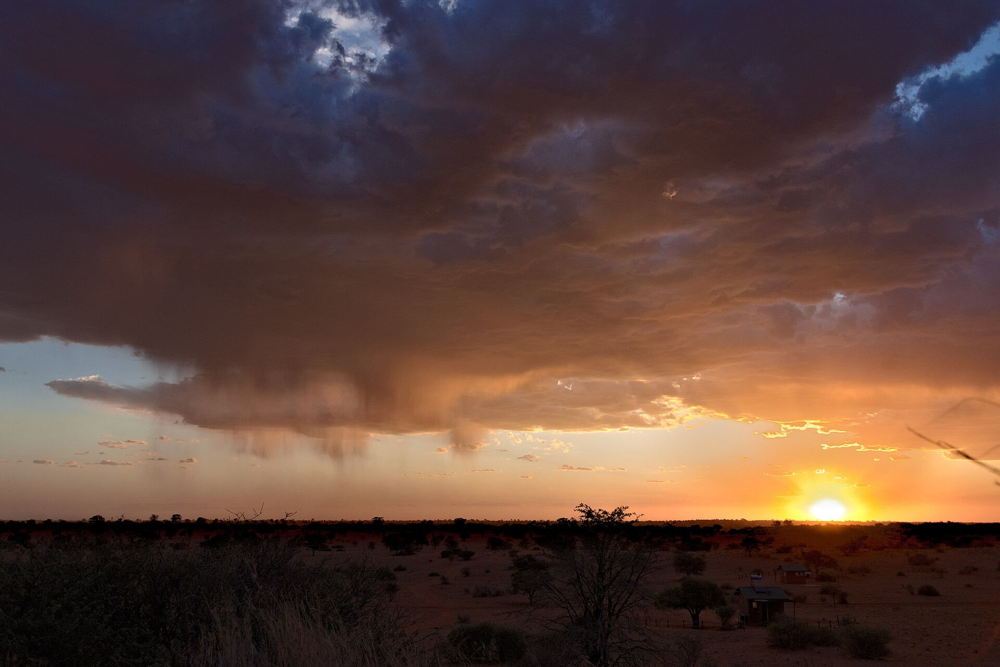
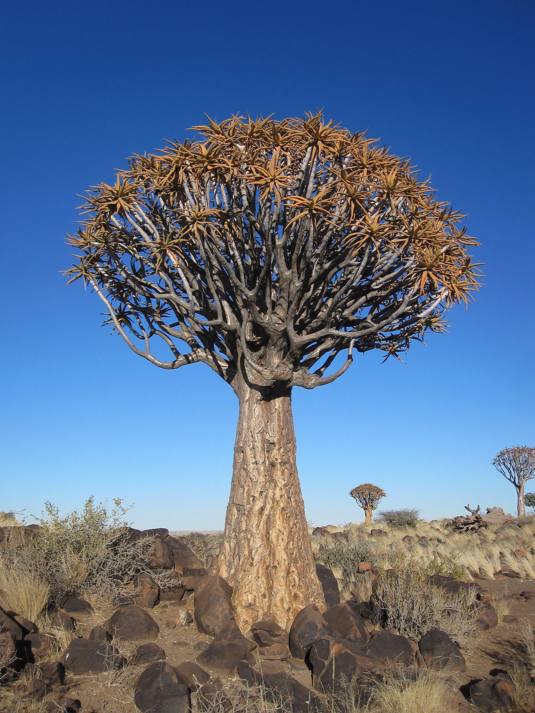
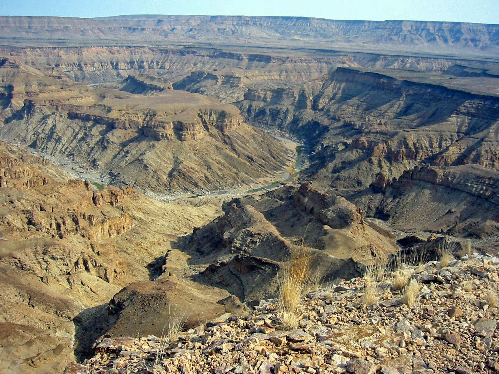
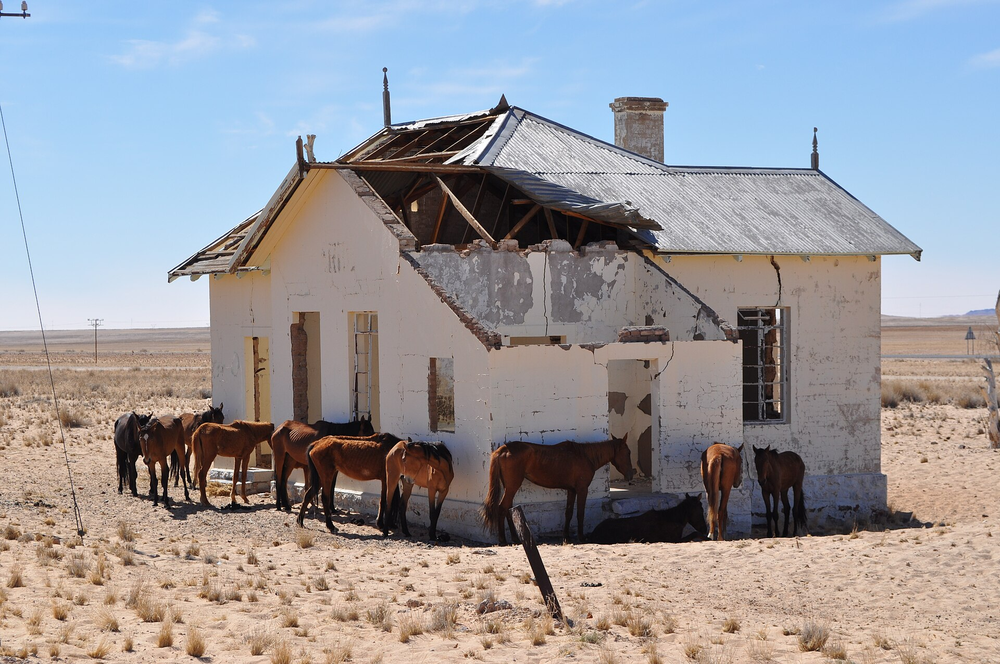
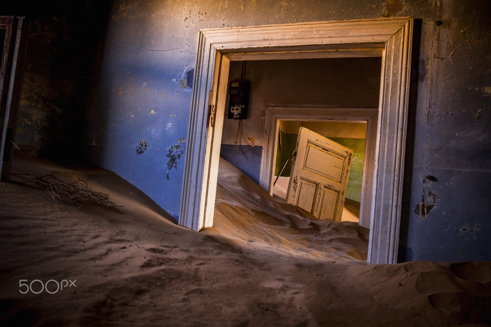
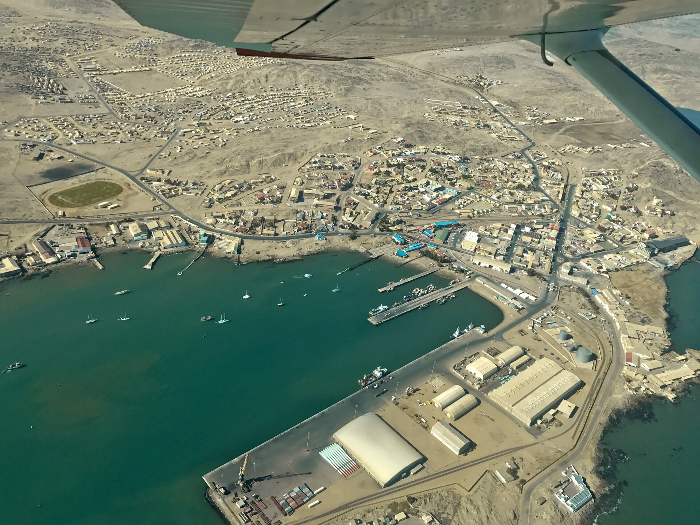
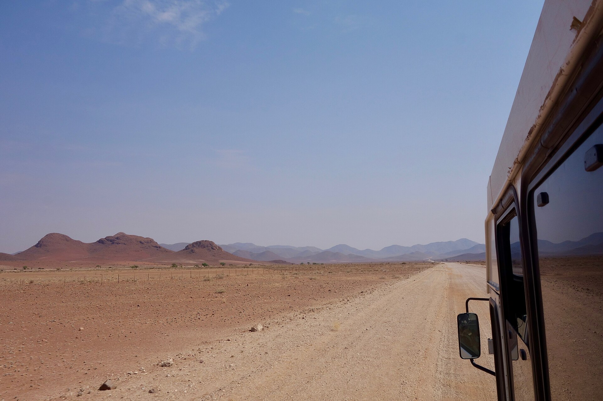
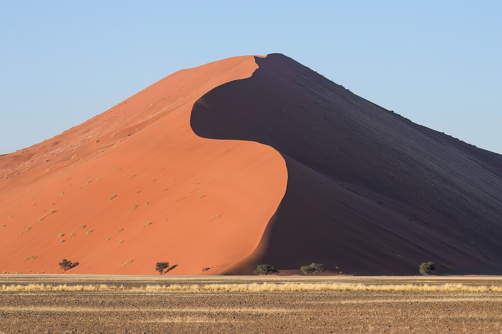
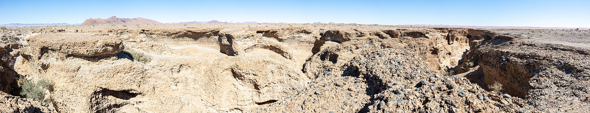
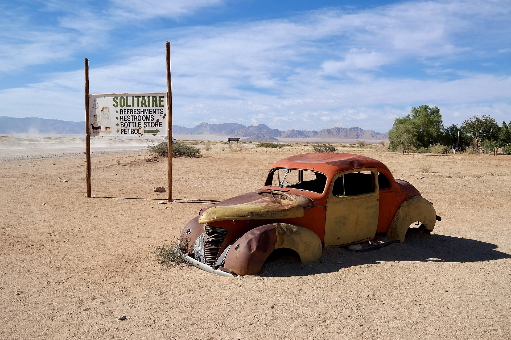
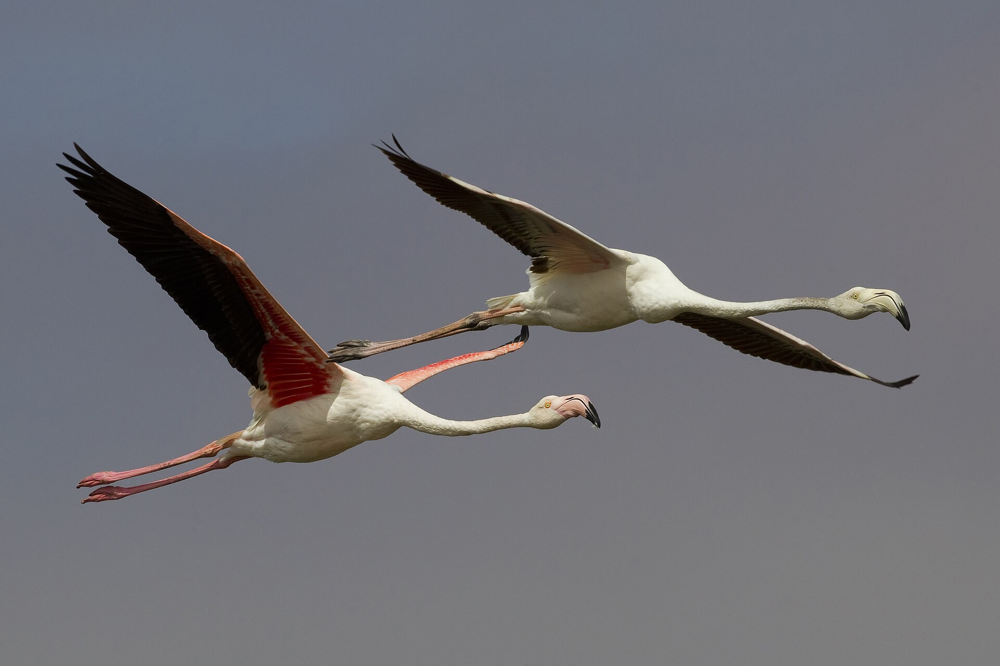
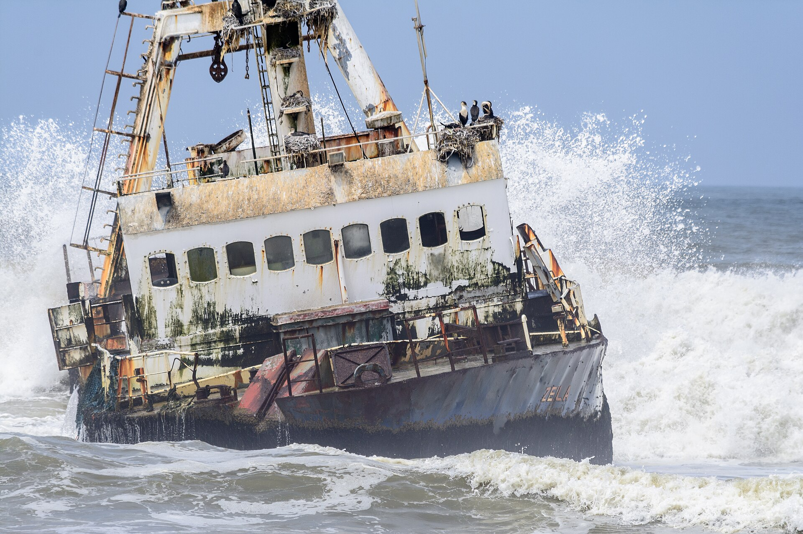
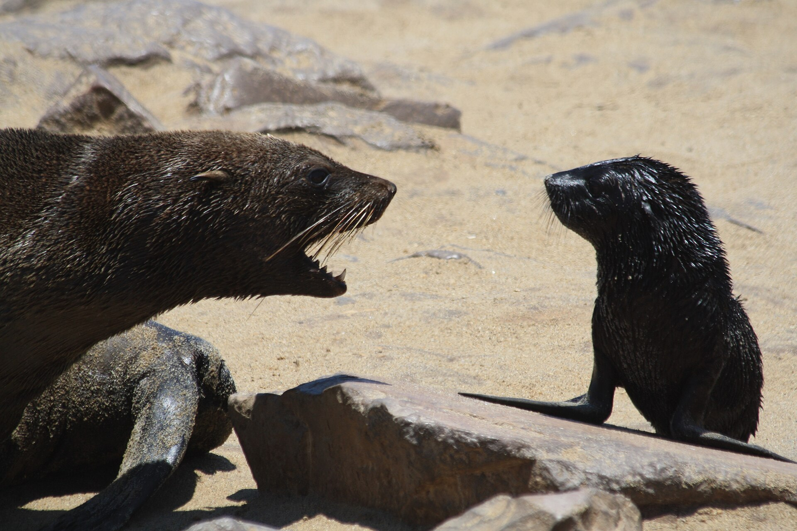
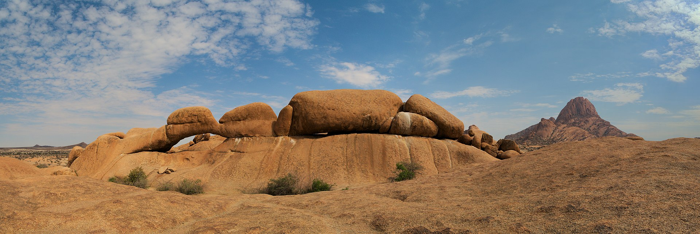
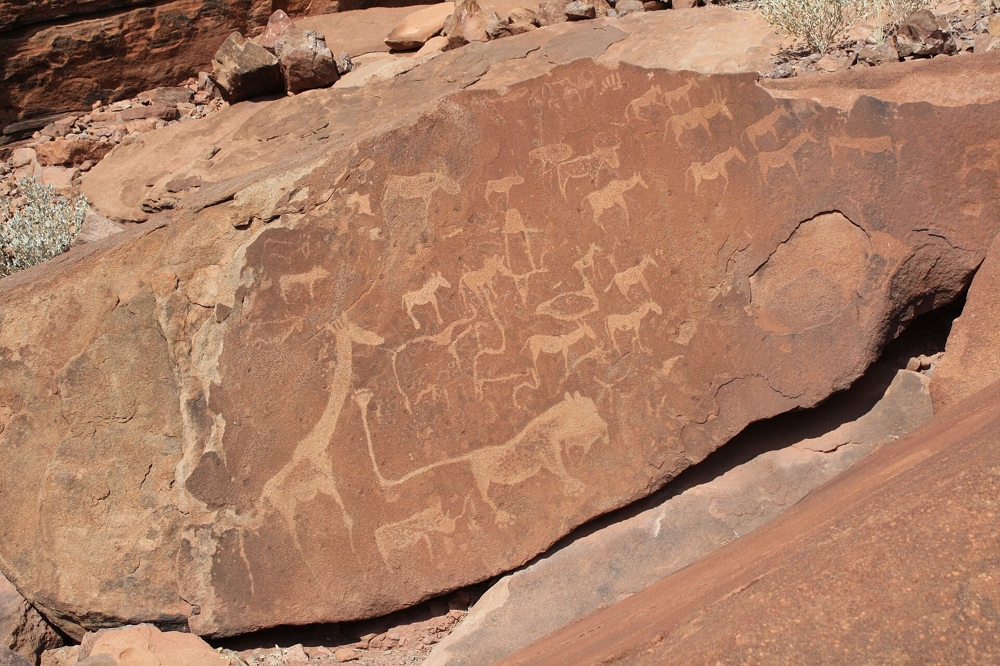
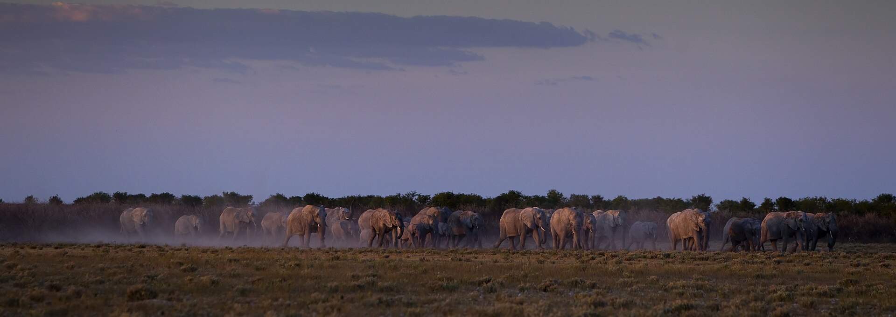
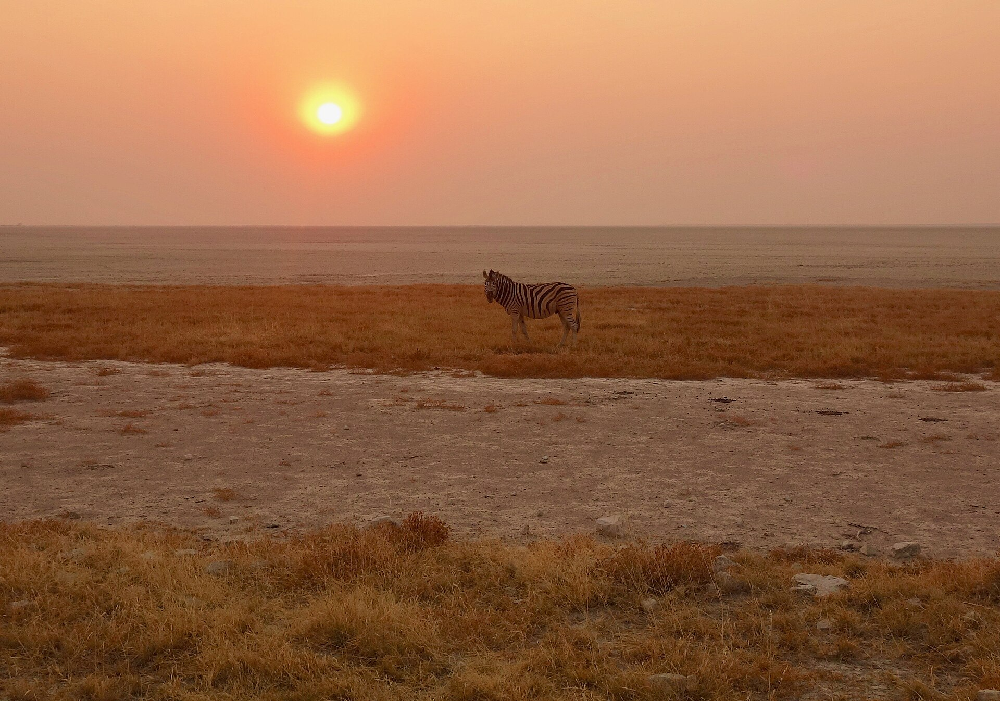
Mapa lógico — porquê esta ordem e rota
Windhoek está no planalto central; o que interessa forma um anel gigante à volta: o sul árido (canyon + diamantes), a muralha de dunas a oeste, a costa fria, o granito do centro-norte e a savana de Etosha. Fazer o anel anti-horário tem quatro vantagens concretas:
- O calor decide a ordem — o sul (Fish River, Kolmanskop) está no limite do suportável em dezembro; fazê-lo nos primeiros dias, com energia fresca e disciplina de madrugada, é mais seguro do que no fim.
- A costa é o alívio térmico a meio — Swakopmund a 20–25 °C com a corrente de Benguela é a pausa perfeita entre dois blocos de deserto: duche, marisco, civilização.
- Etosha no fim = melhor recompensa — a fauna é o clímax emocional; e as chuvas de dezembro no norte, se vierem, são trovoadas de tarde que não estragam manhãs de game drive.
- Nunca refazes estrada — só a ida-e-volta Aus↔Lüderitz repete 125 km, e esses valem-no (é a estrada dos cavalos selvagens e da areia a atravessar o asfalto).
Itinerário dia a dia
Hosea Kutako → Windhoek → dunas do Kalahari
Aterram às 09:25. Levantar o 4x4 (briefing de 1h — os três assistem: macaco, compressor, segunda suplente e, sobretudo, montar e desmontar as duas tendas antes de sair do parque da rental). Grande abastecimento no Superspar/Checkers de Windhoek — comida para 4–5 dias, 25 L de água, gelo — e fuga para sul pela B1. Primeira noite numa quinta do Kalahari (zona Mariental): dunas vermelhas com erva, oryx, e a primeira lição de tenda de tejadilho ainda com luz.
Kalahari → Keetmanshoop → Quiver Tree Forest
Etapa curta de propósito: o calor do sul pede ritmo lento. Chegar a Keetmanshoop, abastecer (combustível + água) e instalar junto à Quiver Tree Forest — floresta de aloés-árvore de 200–300 anos — com o Giant's Playground (caos de dolerito empilhado) ao lado. O programa a sério começa às 17h: luz dourada nos kokerbooms, jantar, e, depois de a lua se pôr por volta das 23:15, o céu escuro com os kokerbooms em silhueta — o melhor primeiro plano de astrofoto do país. Esta é a melhor noite de estrelas de toda a viagem: a partir do dia 20 a lua toma conta do céu. Os alvos são as Nuvens de Magalhães e Oríon, não o núcleo da Via Láctea, que em dezembro não se vê (ver secção 18).
Keetmanshoop → Fish River Canyon (Hobas)
Manhã tranquila (sair cedo na mesma — o gravel aquece). Entrada no parque em Hobas e o canyon guardado para a luz certa: fim de tarde nos miradouros — Main Viewpoint e Hell's Bend — quando o sol baixo esculpe os 550 m de profundidade. O trilho dentro do canyon está fechado (só abre mai–set), portanto o jogo é caminhar ao longo da borda entre miradouros e ficar até ao pôr do sol.
Fish River → Aus (via Canyon Roadhouse)
Nascer do sol no canyon (o melhor momento do dia 3 ou 4 — repete-se se a luz do dia anterior falhou). Café no Canyon Roadhouse (museu vivo de carros enferrujados). Depois Aus pela B4 e, ao fim da tarde, o waterhole de Garub: os cavalos selvagens do Namib — descendentes ferais de cavalaria alemã de 1915 — contra planícies infinitas.
Kolmanskop · Lüderitz · regresso a Aus
O dia urbex. Com o photo permit entra-se em Kolmanskop ao nascer do sol, horas antes das visitas guiadas: casas art nouveau de 1910 com quartos cheios de dunas, luz rasante pelas janelas partidas, silêncio total. Uma povoação de diamantes abandonada em 1956 e devolvida ao deserto — sem cordas, sem vidros, sem ninguém. Ao meio-dia, Lüderitz: península de Diaz Point, casas alemãs no meio do nada, lagosta ao almoço. Regresso a Aus com o vento de cauda.
Aus → D707 → Sesriem
O grande dia de condução, e de propósito: a D707 é candidata a estrada mais bonita da África Austral — dunas cor de ferrugem do Namib de um lado, montanhas Tiras de granito do outro, e provavelmente zero carros. Partir às 7h, parar vezes sem conta, almoçar à sombra de um camel thorn. Rodar os três ao volante a cada 2h: são seis horas de gravel e o cansaço é o verdadeiro risco. Chegada a Sesriem a meio da tarde; entrar no portão interior e espreitar o Elim Dune ao pôr do sol.
Sossusvlei · Deadvlei · Big Daddy · Sesriem Canyon
De pé bem antes de amanhecer, campo levantado, e na fila do portão interior quando ele abre. Dune 45 com a primeira luz, ou directos ao Big Daddy — escolham um, as multidões escolhem o outro. Subir o Big Daddy (~325 m) pela crista enquanto está fresco e descer a correr a face de areia até Deadvlei: acácias mortas de 900 anos sobre argila branca rachada, contra dunas laranja — a imagem da viagem. Fora do vlei às 10h30, piscina, sesta. Fim de tarde: Sesriem Canyon (fresco, lá em baixo) e Elim Dune outra vez se a luz merecer.
Sesriem — o dia de folga que não é folga
O dia extra, e provavelmente o melhor investimento do roteiro. Quem quiser volta a Deadvlei numa segunda madrugada — o seguro contra vento, nuvens ou uma noite mal dormida, e a vlei com luz diferente é outra fotografia. Quem não quiser dorme até tarde: Elim Dune a pé desde o camp, Sesriem Canyon com calma, piscina e sombra durante as horas em que o Namib é inabitável. Este é também o dia para lavar roupa, arrumar o carro e fazer as contas de combustível antes do bloco norte.
Sesriem → Solitaire → Walvis Bay → Swakopmund
Manhã: café e apple pie em Solitaire (ritual nacional) entre carcaças de carros dos anos 50. Cruzar o Trópico de Capricórnio (placa obrigatória) e os passos do Kuiseb Canyon. À chegada à costa a temperatura cai 15 °C — bem-vindos à Benguela. Fim de tarde na lagoa de Walvis Bay: milhares de flamingos a 30 min do deserto absoluto. Noite em Swakopmund, a cidade alemã entre dunas e Atlântico.
Swakopmund → Zeila → Cape Cross → Spitzkoppe
Subida pela costa dos esqueletos "lite" na C34: o navio Zeila enferrujado na rebentação (encalhado em 2008, fotogénico ao raiar da névoa) e a colónia de Cape Cross — dezenas de milhares de focas, com crias em dezembro, e o cheiro correspondente; levem buff. Depois corta-se para o interior até Spitzkoppe, o "Matterhorn da Namíbia": campsites espalhados entre domos de granito de 700 milhões de anos, sem electricidade, sem vedações. O arco de pedra ao pôr do sol e depois o céu inteiro.
Spitzkoppe → Twyfelfontein → Damaraland
Manhã nos penedos de Spitzkoppe (pinturas em Bushman's Paradise, escalada leve nos domos). Depois Damaraland: Twyfelfontein (UNESCO) — mais de 2 500 gravuras rupestres de 2 000 a 6 000 anos, incluindo o famoso "Lion Man" — mais Organ Pipes (colunas de dolerito) e Burnt Mountain ao lado. Atenção aos leitos dos rios secos: em dezembro os elefantes do deserto descem os rios Aba-Huab e Huab. A véspera de Natal passa-se aqui: braai no meio do nada, sem rede e sem ninguém — que é exactamente a ideia.
Damaraland → Anderson Gate → Okaukuejo
Dia de Natal na estrada, com as lojas fechadas e as estradas vazias — a melhor troca possível. Entrada em Etosha ao início da tarde e primeiro game drive até Okaukuejo. Dezembro é época verde: os grandes rebanhos dispersam, mas há crias por todo o lado, aves migratórias e trovoadas monumentais no horizonte da pan. A noite é o espectáculo: o waterhole iluminado de Okaukuejo é dos melhores locais de África para ver rinoceronte-negro — sentar às 21h e esperar em silêncio. Com três pessoas, façam turnos: alguém está sempre acordado quando ele aparece.
Okaukuejo → Halali
Madrugada no waterhole de Okaukuejo — a primeira luz é quando os felinos ainda estão fora. Depois a travessia clássica para leste, parando nos waterholes que o guarda do gate indicar como activos (perguntem sempre: em época verde, essa informação é ouro, porque os animais estão dispersos e só a água concentrada os junta). Halali ao fim da tarde, com o waterhole de Moringa — mais íntimo que o de Okaukuejo, e o melhor do parque para leopardo e rinoceronte-negro à noite.
Halali → Namutoni → Von Lindequist → Waterberg
Última manhã de fauna: Halali → Namutoni pelos waterholes do leste (Chudop, Klein Namutoni), almoço no forte alemão de Namutoni e saída pelo portão Von Lindequist. Depois Tsumeb, Otjiwarongo e a subida ao Waterberg — uma montanha-ilha de arenito vermelho que se levanta 200 m sobre o bush, verde e visivelmente mais fresca que tudo o que vieram a atravessar. Chegada com luz para o miradouro do fim da tarde.
Waterberg → Windhoek → voo
Manhã no planalto do Waterberg: a subida a pé pela ravina (1h, íngreme, faz-se ao fresco das 6h) põe-vos num topo com trilhos marcados, e o plateau é santuário de rinoceronte-branco e negro e de búfalo — a única caminhada da viagem em que se anda a pé em território de fauna grande. Descida, almoço, e os 280 km de asfalto até Windhoek. Devolução do 4x4 com folga (contem 1h: inspecção, depósito cheio, garrafa de gás), shuttle para Hosea Kutako e voo às ~20:00.
Onde dormir cada noite — e porquê
| Noite | Data | Zona | Tipo | Por pessoa | Porquê |
|---|---|---|---|---|---|
| 1 | 14 dez | Kalahari (Mariental) | Campsite de quinta | N$250–350 | Dunas vermelhas, primeira noite fácil |
| 2 | 15 dez | Quiver Tree Forest | Campsite | ~N$220 | Astrofoto com kokerbooms à porta da tenda |
| 3 | 16 dez | Hobas · Fish River | Campsite NWR | ~N$450 | Único alojamento à borda do canyon; piscina |
| 4 | 17 dez | Aus | Campsite | ~N$280 | Fresco (1 400 m); rampa para Kolmanskop |
| 5 | 18 dez | Aus | Campsite (repete) | ~N$280 | Duas tendas montadas, não se mexe |
| 6 | 19 dez | Sesriem | Campsite NWR interior | N$670 | Já dentro do portão: primeiros na fila do interior |
| 7 | 20 dez | Sesriem | NWR (repete) | N$670 | Segunda madrugada = seguro fotográfico |
| 8 | 21 dez | Sesriem | NWR (repete) | N$670 | Dia de folga; o primeiro a cortar se faltar vaga |
| 9 | 22 dez | Swakopmund | Guesthouse (cama!) | ~N$450 | Reset a meio: duche, lavandaria, marisco |
| 10 | 23 dez | Spitzkoppe | Campsite comunitário | N$220 | Granito + dark sky; o mais barato do roteiro |
| 11 | 24 dez | Aba-Huab · Damaraland | Campsite comunitário | N$250–350 | Véspera de Natal em território de elefantes |
| 12 | 25 dez | Okaukuejo · Etosha | Campsite NWR | N$460 | Waterhole nocturno com rinocerontes |
| 13 | 26 dez | Halali · Etosha | Campsite NWR | N$460 | Moringa: o melhor waterhole nocturno do parque |
| 14 | 27 dez | Waterberg | Campsite NWR | N$430 | Encurta o dia do voo para 280 km; rinocerontes a pé |
As dormidas no Google Maps
Prazos: provisória até ao depósito de 20%, que é não reembolsável, e a NWR pode dar o lugar a uma reserva paga enquanto não estiver liquidada. Pagamento total 30 dias antes da chegada, ou seja meados de novembro. Clientes internacionais pagam só pelo link seguro da NWR — confirmado por escrito pela central; transferência bancária não serve.
Km e tempo de condução entre etapas
| Etapa | Km | Tempo | Piso |
|---|---|---|---|
| Aeroporto WDH → Windhoek → Kalahari | 320 | 3h30–4h | Asfalto (B6/B1) |
| Kalahari → Keetmanshoop → Quiver Trees | 250 | 2h45 | Asfalto (B1) |
| Keetmanshoop → Hobas (Fish River) | 160 | 2h | Asfalto + gravel fácil (C12) |
| Hobas → Canyon Roadhouse → Aus | 220 | 3h | Gravel (C12/C13) + asfalto (B4) |
| Aus → Kolmanskop → Lüderitz → Aus | 250 | 3h | Asfalto (B4); areia móvel na berma |
| Aus → D707 → Sesriem | 380 | 5h30–6h | Gravel todo o dia (C13/D707/C27) |
| Sesriem → Sossusvlei (i/v) | 130 | 1h30 | Asfalto no parque; 5 km finais areia 4x4 |
| Sesriem — dia extra (Elim, canyon, 2.ª ida) | 60 | 1h | Curto de propósito |
| Sesriem → Solitaire → Walvis → Swakopmund | 350 | 4h30–5h | Gravel (C19/C14) + asfalto final |
| Swakopmund → Cape Cross → Spitzkoppe | 290 | 4h | Salt road (C34) + gravel (D1918) |
| Spitzkoppe → Twyfelfontein | 280 | 4h | Gravel (C35/C39) |
| Twyfelfontein → Okaukuejo (Etosha) | 300 | 4h30 | Gravel (C39/C40) + asfalto no parque |
| Okaukuejo → Halali (com game drives) | 130 | 2h30+ | Gravel de parque, 60 km/h máx. |
| Halali → Namutoni → Waterberg | 350 | 5h | Parque + asfalto (B1/C22) |
| Waterberg → Windhoek → aeroporto | 280 | 3h | Asfalto (C22/B1) |
| Total do circuito | ~3 750 | ~51h ao volante | ≈ 50% gravel · ~17h por condutor |
Pontos-chave no Google Maps
Trail guide — as caminhadas principais
Big Daddy → Deadvlei
Sobe a crista da duna de ~325 m com o nascer do sol nas costas e desce a face de areia direto a Deadvlei. Areia mole = cada passo vale dois. Leva 2 L de água mesmo às 7h. A descida em passos largos é pura alegria.
Dune 45
A duna-icone. Sobe só até meio se o tempo apertar — o postal é a crista em S, não o topo. Ao nascer do sol a face leste arde em laranja; volta a descer antes das 9h.
Bordo do canyon: Main Viewpoint → Hell's Bend
Caminho plano ao longo da borda, com o abismo de 550 m à esquerda. O trilho de descida está fechado em dezembro; este passeio ao pôr do sol dá 90% do espetáculo com 5% do esforço.
Arco + Bushman's Paradise
Domos de granito com aderência perfeita: sobe descalço ou de aproximação. O arco ao pôr do sol, o anfiteatro de pinturas rupestres de manhã. Cuidado com o granito quente à tarde.
Sesriem Canyon
Desce ao leito do Tsauchab entre paredes de conglomerado de 30 m. Fresco ao meio-dia — é o único sítio do parque onde o calor perdoa. Depois de chuva pode ter água: verifica antes de entrar.
Trilhos do planalto
Se fizeres a extensão: trilhos marcados no topo da montanha-ilha, vegetação exuberante pós-chuva e a hipótese rara de cruzar rinocerontes a pé (com as regras do parque).
Melhores locais de nascer e pôr do sol
| Momento | Local | Porquê |
|---|---|---|
| Nascer | Deadvlei | As acácias acendem antes de o sol tocar o chão do vlei — chega ANTES da luz directa |
| Nascer | Kolmanskop | Luz rasante pelas janelas partidas, sombras longas nos quartos de areia (só c/ photo permit) |
| Nascer | Dune 45 | A crista em S com metade em fogo, metade em sombra |
| Nascer | Waterhole de Okaukuejo | Animais ainda na água, luz baixa e rosa sobre a poeira |
| Pôr | Fish River · Hell's Bend | O sol entra alinhado com o meandro; o canyon inteiro em camadas |
| Pôr | Arco de Spitzkoppe | O granito passa de laranja a vermelho-sangue; o clássico absoluto |
| Pôr | Quiver Tree Forest | Silhuetas de kokerboom contra céu de trovoada — dezembro dá céus dramáticos |
| Pôr | Elim Dune · Sesriem | A única duna que podes subir ao fim do dia sem sair do perímetro do camp |
| Pôr | Lagoa de Walvis Bay | Flamingos cor-de-rosa sobre água cor-de-rosa |
Locais de observação de fauna
- Okaukuejo waterhole (noite) — rinoceronte-negro quase garantido entre as 21h e a 01h; elefantes, leões ocasionais. O melhor "sofá de fauna" de África. mapa
- Girafas — das mais fiáveis de Etosha e a que menos falha. A girafa-angolana vê-se por cima do mopane a centenas de metros, e como bebe de poucos em poucos dias aparece nos waterholes mesmo com a água dispersa. Melhores zonas: as planícies abertas entre Okaukuejo e Halali e a orla da pan. Em três dias, seria azar não ver.
- Etosha em época verde — pergunta no gate quais os waterholes activos; Okondeka (leões), Homob e Chudop (elefantes) são apostas clássicas. Crias de zebra/springbok por todo o lado em dezembro.
- Cape Cross — 100 000+ focas; em nov–dez nascem as crias (e os chacais rondam a colónia — cenas de documentário, estômago avisado).
- Lagoa de Walvis Bay + Sandwich Harbour — flamingos-maiores e -pequenos aos milhares, pelicanos; maré baixa é melhor.
- Cavalos selvagens de Garub (Aus) — o waterhole tem abrigo de observação; fim de tarde é quando descem a beber.
- Elefantes do deserto · rios Huab/Aba-Huab — seguem os leitos secos; em dezembro com as primeiras chuvas movem-se mais. Guia local recomendado.
- Oryx, springbok, avestruz — em todo o lado, sempre; o oryx contra uma duna vermelha é O postal namibiano.
- Kalahari ao entardecer — suricatas, bat-eared foxes e órixes nas cristas das dunas da primeira noite.
Praticamente certo — girafa, zebra-de-Burchell, oryx, springbok, gnu, kudu, avestruz, chacal. E muitas crias: dezembro é época de parto.
Muito provável — elefante, e rinoceronte-negro no waterhole iluminado de Okaukuejo ou no Moringa de Halali, à noite.
Cara ou coroa — leão. Talvez metade das visitas de três dias nesta época.
Sorte — leopardo, guepardo, hiena-castanha.
A ressalva de dezembro, e é importante: na época seca todos os animais são obrigados a ir aos waterholes bombeados e o safari faz-se sozinho. Com as primeiras chuvas há água por todo o lado, e os animais dispersam-se. Não é que haja menos — é que estão espalhados por 22 000 km². Daí a regra de perguntar no portão quais os waterholes continuam activos: é a informação mais valiosa do dia.
Top 20 locais imperdíveis
| # | Local | O quê | Prioridade |
|---|---|---|---|
| 1 | Dunas do Kalahari | Savana de dunas vermelhas, primeira noite | ★★★ |
| 2 | Quiver Tree Forest + Giant's Playground | Aloés-árvore + dolerito empilhado | ★★★★ |
| 3 | Fish River Canyon | 550 m de profundidade, 160 km de meandros | ★★★★★ |
| 4 | Canyon Roadhouse | Café-museu de ferrugem com humor | ★★ |
| 5 | Cavalos de Garub | Cavalos ferais do deserto | ★★★ |
| 6 | Kolmanskop | Cidade fantasma dos diamantes | ★★★★★ |
| 7 | Lüderitz + Diaz Point | Art déco alemão no fim do mundo | ★★★ |
| 8 | D707 | A estrada mais bonita da África Austral | ★★★★★ |
| 9 | Deadvlei | Acácias de 900 anos em argila branca | ★★★★★ |
| 10 | Big Daddy + Dune 45 | As dunas gigantes que se sobem | ★★★★★ |
| 11 | Sesriem Canyon | Garganta fresca no meio do forno | ★★★ |
| 12 | Solitaire | Apple pie + carros abandonados | ★★ |
| 13 | Passo do Kuiseb | Canyon lunar na C14 | ★★★ |
| 14 | Lagoa de Walvis Bay | Flamingos aos milhares | ★★★ |
| 15 | Swakopmund | Alemanha colonial entre dunas e mar frio | ★★★ |
| 16 | Zeila + costa C34 | Naufrágio na névoa da Benguela | ★★★ |
| 17 | Cape Cross | A maior colónia de focas do hemisfério | ★★★★ |
| 18 | Spitzkoppe | Granito de 700 M de anos + arco + dark sky | ★★★★★ |
| 19 | Twyfelfontein + Organ Pipes | 2 500 gravuras UNESCO | ★★★★ |
| 20 | Etosha (Okaukuejo → Namutoni) | Safari self-drive + waterhole nocturno | ★★★★★ |
Sobrevalorizados — ignorar ou minimizar
- Windhoek em si — meio dia chega e sobra. Christuskirche, compras, e estrada. É logística, não destino.
- Passeios de quad/sandboard em Swakopmund — a cidade vende adrenalina de catálogo; tu tens as dunas verdadeiras grátis a 3h dali.
- Cruzeiros de catamarã em Walvis Bay — simpáticos, mas 4h e ~N$1 000 para ver focas que verás grátis em Cape Cross aos milhares.
- Okahandja / mercados de madeira — souvenirs industriais; se quiseres artesanato, compra às mulheres herero em Spitzkoppe/Uis.
- Vogelfederberg e miradouros pagos "de quinta" — há paisagem igual grátis na estrada seguinte.
- Etosha ao meio-dia — das 11h às 15h30 a pan é um espelho vazio e trémulo. Usa essas horas para piscina/sesta no camp e poupa o combustível dos drives para o crepúsculo.
Estradas panorâmicas obrigatórias
A rainha
Entre as dunas do Namib e as montanhas Tiras. Melhor ao início da manhã, para sul→norte com o sol de lado. Zero serviços: parte de Aus com depósito cheio.
A estrada da areia
O deserto tenta engolir o asfalto — máquinas limpam dunas da estrada como quem limpa neve. Vento lateral forte; cuidado ao fotografar na berma.
Passos de Gaub & Kuiseb
Paisagem lunar do canyon do Kuiseb, onde dois geólogos alemães se esconderam na II Guerra (lê "The Sheltering Desert" antes). Curvas de gravel com piso duro.
Salt road dos esqueletos
Estrada de sal comprimido entre névoa e rebentação, com naufrágios e bancas de sal com caixa de honestidade. Escorrega quando molhada pela névoa da manhã.
Vales vermelhos
Mesas de basalto, leitos de rios secos com elefantes possíveis e o vazio absoluto. Depois de trovoada verifica se os leitos levam água antes de atravessar.
Okaukuejo → Namutoni
Contornar a pan branca com miradouros para o "grande nada" — o Etosha Pan lookout mete-te literalmente dentro do espelho de sal.
Melhores locais de fotografia
Kolmanskop
Grande-angular + tripé; janelas como molduras, areia como protagonista. HDR ou bracketing para os interiores contra janelas queimadas. O photo permit paga-se a si próprio na primeira hora.
Deadvlei
70–200 mm comprime as acácias contra a duna laranja; a foto clássica é telefoto, não grande-angular. Chega antes da luz directa e trabalha o contraste sombra/fogo.
Spitzkoppe + Quiver Trees
Silhueta de kokerboom como primeiro plano — mas não do núcleo galáctico, que em dezembro não se vê de noite. Os alvos são as Nuvens de Magalhães e Oríon. A janela é 14–17 dez, antes de a lua crescer; a 24 é lua cheia. Ver a secção 18.
Okaukuejo de noite
O waterhole é iluminado: ISO alto, apoio no muro, sem flash. De dia em Etosha dispara do carro com saco de feijão na janela.
Dunas + pan
Texturas de areia ao nascer do sol na D707 e Elim Dune; o Etosha Pan como minimalismo branco total ao meio-dia — o único uso decente da luz má.
Estrada
As placas ("Elephants crossing", Trópico), as bombas de gasolina perdidas, o Canyon Roadhouse, a caixa de honestidade do sal. A Namíbia rural é um ensaio fotográfico contínuo.
Locais menos conhecidos, frequentados por namibianos
- Elim Dune ao pôr do sol — os turistas vão todos a Sossusvlei de manhã e desaparecem; ao fim do dia tens uma duna inteira para ti dentro do perímetro de Sesriem.
- Península de Lüderitz até Grosse Bucht — lagoas com flamingos, praias de vento e pinguins-africanos ao large; os alemães-namibianos fazem lá churrascos de domingo.
- Bancas de sal da C34 — cristais de sal com caixa de honestidade: deixa as moedas, leva o sal. Miniatura perfeita da confiança rural namibiana.
- Uis — vila mineira semi-adormecida aos pés do Brandberg; paragem de gasosa entre Spitzkoppe e Damaraland, com vendedoras de cristais na berma.
- Okondeka — waterhole no limite da pan a norte de Okaukuejo, famoso entre locais pelo orgulho de leões residente e ignorado pelos tours com pressa.
- Braai à namibiana — compra boerewors e chops no Spar, lenha de camel thorn nos camps, e faz como toda a gente à volta: o braai é a religião nacional e o teu jantar de campsite todas as noites.
Cidades fantasma & urbex do deserto
A capital do género
Hospital, salão de baile, casa do contabilista — tudo com dunas dentro. Photo permit = acesso ao amanhecer, horas antes das tours e praticamente sem ninguém. Não é preciso mais nada: é possivelmente o melhor urbex "assistido" do mundo.
A irmã esquecida
Mais arruinada e mais crua que Kolmanskop, dentro da zona restrita; só com tour/permit especial de Lüderitz — se conseguires vaga, é urbex sem cordas nem multidões.
Pomona & Bogenfels
A "zona proibida" dos diamantes: Pomona (vila fantasma varrida pelo vento) e o arco de Bogenfels (55 m sobre o mar). Tour de dia inteiro a partir de Lüderitz (~N$2 000) — só se esticares para 14 dias.
Naufrágios
Zeila (acessível, fotogénico) e restos menores ao longo da C34. O deserto e o sal fazem ao aço o que fazem às casas: escultura lenta.
Dunas & desertos — o essencial
- Kalahari (dia 1) — dunas vermelhas vegetadas, lineares; não é o Namib, é savana em ondas. Boa entrada em matéria.
- Namib em Sossusvlei (dias 6–7) — as estrelas: Dune 45, Big Daddy (~325 m), Big Mama. As mais altas do mundo em contexto de vlei.
- Elim Dune — a acessível, a 5 km de Sesriem; sunset sem logística.
- Dunas da B4 (dia 5) — o mar de areia a atravessar a estrada antes de Lüderitz; movimento real de dunas visível.
- Dune 7 (Walvis Bay) — alta e junto à estrada, mas ambiente de parque de merendas; só se sobrar tempo.
- Regra de ouro térmica — areia a 60 °C à tarde: dunas só até às 10h ou depois das 17h30, sempre com calçado.
Costa atlântica — a Benguela
- Lagoa de Walvis Bay — flamingos, pelicanos, maré-baixa espelhada. Grátis, ao fim da tarde.
- Swakopmund — molhe de 1905, arquitectura guilhermina, gelado alemão. A "capital de férias" namibiana — em dezembro os locais chegam depois do Natal; antes do dia 15 está calma.
- C34 para norte — Zeila, bancas de sal, Cape Cross. A névoa matinal (cassimbo) é fotogénica e gélida: casaco à mão.
- Sandwich Harbour (opcional, meio-dia) — dunas a cair no mar; só com tour 4x4 de maré (~N$1 700) — espectacular mas caro; decide na hora conforme orçamento.
- Água — a 14–16 °C: os namibianos entram; tu decides o quão português és nesse dia.
Canyons
- Fish River Canyon — 160 km de comprimento, 27 de largura, 550 m de fundo: segundo maior do mundo. Miradouros de Hobas ao pôr do sol/nascer.
- Sesriem Canyon — 1 km, 30 m: pequeno mas entra-se dentro; fresco e estratificado.
- Kuiseb Canyon (C14) — badlands lunares na estrada para a costa; miradouro na berma, 15 min bem gastos.
- Gaub Pass — o irmão menor do Kuiseb, logo antes; curvas cénicas.
Locais para ficar horas só a contemplar
- Waterhole de Okaukuejo, 22h — teatro de fauna em silêncio absoluto; a noite inteira se deixares.
- Bordo do Fish River ao pôr do sol — geologia de 500 milhões de anos a mudar de cor.
- Deadvlei às 7h — quando os autocarros ainda não chegaram, é uma catedral.
- Granito de Spitzkoppe à noite — deitados na rocha ainda morna, com a lua cheia de 23 de dezembro a acender o arco de granito. Não é a noite de estrelas que o cartaz promete, mas é a mais bonita de se estar lá.
- Etosha Pan lookout — o nada branco absoluto; o cérebro precisa de minutos para aceitar a escala.
- D707, qualquer berma — desliga o motor. O silêncio do Namib é físico, ouve-se o sangue.
Dark sky · observação de estrelas
- A janela é 14 a 17 de dezembro, no início da viagem — a lua está a crescer e põe-se cedo: 22% no dia 14 (deita-se ~22:30), 31% no dia 15 (~23:15), 41% no 16, 52% no 17. Depois disso agrava-se todas as noites.
- Lua cheia a 24 de dezembro. De 20 a 28 a lua está acima dos 80% e domina o céu a noite inteira. Spitzkoppe, a 23, apanha 98% — é a noite mais bonita do roteiro e a pior para astro profundo. Bortle 1–2 não serve de nada com a lua acesa.
- Quiver Tree Forest (dia 2, 15 dez) é a melhor noite de astro da viagem. Lua a 31% e a pôr-se por volta das 23:15 — depois disso é céu escuro com os kokerbooms em silhueta, que é a composição que ninguém mais no mundo tem. Dormem lá dentro, portanto é só esperar.
- Kalahari (dia 1, 14 dez) — a segunda melhor: lua a 22% e a deitar-se ~22:30. Se houver trovoada ao longe, relâmpagos e estrelas no mesmo enquadramento.
- O núcleo da Via Láctea não se vê. Em dezembro o Sol está em Sagitário, ou seja o centro galáctico anda atrás dele e só nasce de dia. O arco brilhante que se vê nas fotos da Namíbia é feito entre março e setembro, com pico em junho e julho. Não contem com ele.
- O que está mesmo lá em cima: as duas Nuvens de Magalhães altas a sul ao início da noite — e dezembro é dos melhores meses para elas, só visíveis do hemisfério sul; Oríon ao zénite e de cabeça para baixo, com a nebulosa M42; o enxame 47 Tucanae junto à Pequena Nuvem; e o braço exterior da Via Láctea por Carina, Vela e Cão Maior — mais ténue que o núcleo, mas é Via Láctea a sério, e traz a nebulosa de Carina.
- Cruzeiro do Sul — em dezembro só de madrugada e baixo no horizonte. Culmina em maio; quem quiser vê-lo alto tem de esperar pelas 3h.
- Sesriem (dias 6–8) — a reserva Gold Tier do NamibRand é a sul, e do camp já é excelente. Mas 19 a 21 apanham a lua entre 72% e 89%.
- Spitzkoppe com lua cheia, o lado bom — troquem o alvo: o arco de granito iluminado pela lua não precisa de light painting, faz-se paisagem nocturna com exposições curtas, e vê-se onde se põe os pés sem frontal. É outra fotografia, não uma pior.
- Trovoadas — em dezembro no norte, timelapse de relâmpagos sobre a pan de Etosha é um género próprio, e a lua não atrapalha.
Custos estimados
| Rubrica | Grupo | Por pessoa | Notas |
|---|---|---|---|
| Voos OPO–WDH (i/v) × 3 | 2 572 | 857 | Reservado, bagagem da Ryanair já incluída. Ryanair OPO–HHN + Lufthansa/Discover FRA–WDH |
| Autocarro Hahn ↔ Frankfurt, i/v × 3 | 120 | 40 | ~1h45 cada sentido, €14–26/pessoa |
| 4x4 double cab + 2 tendas, 15 dias | 1 305 | 435 | Gama budget a €87/dia — dezembro é barato no aluguer |
| Alojamento (13 camps + 1 cama) | 935 | 312 | 7 noites NWR pesam mais de metade |
| Combustível ~3 750 km | 700 | 233 | ~460 L a N$28,50 (diesel, set/2026) |
| Comida & braai | 673 | 224 | Supermercado + 4–5 refeições fora |
| Taxas de parque | 529 | 176 | 11 dias × 3 × N$280 + viatura a N$60/dia — tarifa oficial de 1 abr 2026 |
| Vistos (3 × N$1 600) | 256 | 85 | Obrigatório para portugueses desde 1 abr 2025 — ver §22 |
| Extras (SIM, Kolmanskop, gorjetas) | 250 | 83 | Photo permit N$370 p/p é o maior |
| Total | ≈ 7 340 | ≈ 2 447 | Com margem de 10%: ≈ €2 690 p/p |
Portões de Etosha em dezembro
| Datas | Abre | Fecha | O que isso significa para vocês |
|---|---|---|---|
| 14–20 dez | 06:13 | 19:30 | — |
| 21–27 dez | 06:17 | 19:34 | Cobre a entrada (25), a travessia (26) e Namutoni (27) |
| 28–31 dez | 06:20 | 19:36 | A hora a que têm de sair no dia do voo |
Equipamento recomendado (dezembro, três pessoas, campsites)
Confirma no briefing
Duas tendas de tejadilho + colchões, arca térmica/frigorífico 12 V, fogão a gás + garrafa cheia, três cadeiras e mesa, kit cozinha para 3, 2 rodas suplentes, macaco + placa, compressor, pá e um jerricã de reserva — a NWR confirmou por escrito que não há combustível em nenhum dos parques. Confirmem no contrato que são duas tendas — e montem e desmontem ambas no parque da rental, com os três a aprender, antes de sair.
O não-negociável
Contentor de 25 L não chega para três: levem 40–50 L de capacidade, mais 3 L pessoais por pessoa no banco. Electrólitos, chapéu de abas, buff e protector 50+ para cada um. A regra: chegar a qualquer camp com ≥15 L de reserva.
Contra areia e luz dura
Tripé, ND/polarizador, sacos zip para os corpos, pêra de ar (areia em TUDO), power bank grande + inversor 12 V, cartões a dobrar. Telefoto para Deadvlei/fauna, grande-angular para astro/Kolmanskop.
Camp & astro
Frontal + luz vermelha, saco lençol (noites do interior a 18–22 °C; Aus mais fresco), lanterna de campsite, chinelos anti-escorpião para a noite.
Meteorologia de dezembro & roupa
| Zona | Dia | Noite | Notas |
|---|---|---|---|
| Sul (Kalahari, Keetmanshoop, Fish River) | 33–40 °C | 17–22 °C | Seco extremo; o bloco mais quente da viagem |
| Aus (1 400 m) · noites 4–5 | 28–33 °C | 12–16 °C | A mais fresca do sul, pela altitude — a melhor noite de sono do bloco |
| Sossusvlei / Sesriem | 35–40 °C | 18–23 °C | Areia escaldante à tarde; madrugadas perfeitas |
| Costa (Swakopmund, Cape Cross) | 18–25 °C | 13–16 °C | Névoa matinal, vento; casaco necessário! |
| Centro-norte (Spitzkoppe, Damaraland) | 30–36 °C | 18–22 °C | Possíveis trovoadas fim de tarde |
| Etosha | 30–35 °C | 19–23 °C | Época húmida a começar: aguaceiros, tudo verde |
| Waterberg · noite 14 | 27–32 °C | 15–19 °C | Em altitude e verde; mais fresco que Etosha (estimado — não medido) |
As duas noites frescas — Aus (12–16 °C) e Waterberg (15–19 °C) — resolvem-se com edredão mais o polar que já levam para a costa.
O que levar em vez disso: um saco-lençol por pessoa. Pesa 200–400 g, cabe num punho, resolve a questão de higiene de roupa de cama alugada, e é a camada extra nas duas noites frias. Em Etosha, com a humidade da época verde, um de algodão é mais confortável que um sintético.
E confirmem isto no contrato do aluguer: que há roupa de cama para três pessoas, não para duas. Uma tenda de tejadilho "dupla" leva duas — se o segundo edredão não vier, alguém dorme sem.
Roupa: 90 % verão técnico (calções, camisas leves de manga comprida — o sol pica mais do que o calor), um polar e um corta-vento para a costa e madrugadas, calçado de aproximação, chinelos. Nada de algodão pesado. Um conjunto "decente" para Swakopmund chega.
As margens são generosas, e isso foi bem pensado: à ida chegam ao Hahn às 10:55 e o voo de Frankfurt é às 22:00 — 11 horas, das quais 2 de autocarro. À volta aterram em FRA na manhã de 29 e o voo do Hahn é às 21:20, com cerca de 15 horas pelo meio. Longo, mas sem risco.
2. São dois bilhetes separados, e isso não é protegido. Se a Ryanair cancelar o voo de 13 de dezembro, a Lufthansa não deve nada — e vice-versa. A exposição real é uma só: chegar a Frankfurt no dia 13. Se esse voo cair, há alternativas no mesmo dia (TAP e Lufthansa voam Porto–Frankfurt), mas em semana de Natal saem caras. Vale a pena um seguro que cubra ligação perdida entre reservas separadas — muitas apólices excluem exactamente isto.
3. A bagagem. A da Ryanair está comprada e já incluída no preço dos bilhetes — resolvida. Vale só saber porquê foi preciso: são franquias independentes, e a mala de cabina de 8 kg da Lufthansa não passa na tarifa base da Ryanair, que dá apenas um saco pessoal de 40×20×25 cm.
Com uma só mala de porão para os três (decisão tomada), a conta de peso é: 23 kg de porão + 3 × 8 kg de cabina = 47 kg. Dá, porque a tenda, a cama e a cozinha vêm com o carro e a roupa é de verão. Mas o aperto está na cabina, não no total: um corpo de máquina com duas objectivas come 4 a 5 kg dos 8. Quem levar a mala de porão deve ser quem carrega o material comum — tripé, lanternas, kit de primeiros socorros — e o material fotográfico vai sempre à mão, nunca despachado.
Qual pedir: "Visa on Arrival", não "Holiday Visa". No portal
eservices.mhaiss.gov.na são o mesmo visto de turismo; o que muda é a duração e a elegibilidade. O Visa on Arrival vale até 30 dias e Portugal é elegível — os 15 dias cabem com folga. O Holiday Visa existe para estadias até 90 dias e para nacionalidades sem direito a VoA; aqui não acrescenta nada e custa o mesmo.
Mas peçam-no online, antes de partir. Ambos são pré-candidaturas no mesmo portal, pagas online, e chega-se com o e-visa aprovado impresso. O VoA também se trata no balcão do aeroporto, mas não o façam: aterram às 09:25 e o dia 1 tem de levar carro, compras em Windhoek e 320 km até ao Kalahari antes do pôr do sol. Uma fila de imigração come essa margem toda.
Custo: N$1 600 por pessoa (~€85), N$4 800 para os três. Documentos: passaporte com 6 meses de validade e 3 páginas em branco, comprovativo de alojamento (serve a confirmação da NWR), itinerário, seguro de viagem e foto.
A confirmar no portal: com quanto tempo se deve submeter, e se a aprovação tem validade a contar da emissão. O processamento indicado é de ~48h — não contem com isso à justa. (Verificado na missão da Namíbia na Suíça e no portal oficial; reconfirmar perto da data.)
Segurança & condução em gravel
- Gravel: 80 km/h máximo, sério — a causa nº 1 de acidentes de turistas é capotar em gravel por excesso de velocidade. Deixem 3 s para o carro da frente (poeira cega) e travem ANTES das curvas, nunca dentro.
- Rotação de condutores — troca a cada 2h ou 200 km. Quem não conduz vigia a estrada e a temperatura do motor; o lugar de trás em gravel abana e adormece, e é aí que se perde a noção do tempo. Nos dias de 350 km+ (6, 9, 14) a rotação não é opcional.
- Três cartas internacionais (IDP) — todos os condutores têm de estar nomeados no contrato de aluguer. Um condutor não registado ao volante anula o seguro por inteiro, mesmo que a culpa seja do outro carro.
- Nunca conduzir de noite — órixes, kudus e gado dormem no asfalto morno. Um kudu pelo pára-brisas é fatal. Planeado: sempre parados às 19h.
- Pneus — baixa pressão em gravel conforme briefing do rental (~1,8 bar); verifica todas as manhãs. Furos são normais: um pneu furado não é emergência, dois sem reserva é.
- Leitos de rio em dezembro — flash floods são reais no norte: nunca atravesses um leito com água em movimento; espera (baixa em 1–2h).
- Windhoek cidade — precauções urbanas normais: nada à vista no carro, centro a pé só de dia. Fora de Windhoek o tema praticamente desaparece.
- Malária — dezembro abre a época no norte (Etosha/Damaraland): consulta do viajante para profilaxia + repelente DEET ao entardecer.
- Comunicações — grandes troços sem rede. Deixem o plano de cada noite com alguém em Portugal; considerem o Garmin inReach do rental (~€3/dia), que dividido por três custa quase nada.
- Fauna nos camps — chacais e hienas rondam camps de Etosha: nada de comida na tenda. Em Damaraland, respeito total por elefantes na estrada: motor ligado, 50 m, nunca entre mãe e cria.
Apps úteis
Tracks4Africa
O GPS da África Austral: estados de estrada, tempos realistas de gravel, todos os camps. Compra antes de ir (~€25) — vale mais que o Google Maps inteiro aqui.
Maps.me / OsmAnd
Backup offline gratuito com trilhos que o Google não tem.
iOverlander
Reviews de campsites por overlanders, com "wild spots" e água potável.
PhotoPills / Stellarium
Planeamento de astro e alinhamentos de sol/lua para Deadvlei e Spitzkoppe.
Windy
Vento na costa (areia a voar em Lüderitz) e células de trovoada no norte.
MTC (SIM local)
SIM pré-paga MTC no aeroporto (~N$100 com dados "Aweh"): cobre vilas e estradas principais; o resto é silêncio — que também vieste buscar.
Onde comprar comida barata
- Windhoek (dia 1) — Superspar/Checkers: o grande abastecimento para três. Carne para braai embalada a vácuo aguenta 3–4 dias na arca com gelo. Contem ~N$280 por pessoa por dia em supermercado.
- Keetmanshoop, Lüderitz, Swakopmund, Outjo — Spar/OK Foods para reabastecer; gelo em TODAS as bombas de gasolina.
- 25 de dezembro: tudo fechado. O último supermercado a sério é Swakopmund a 22 — comprem para quatro dias (23 a 26), incluindo a carne do braai de Natal. Uis e Khorixas têm lojas pequenas e imprevisíveis em feriado, e dentro de Etosha a loja de Okaukuejo é cara e limitada.
- Padarias alemãs — brötchen e apfelstrudel em Swakopmund/Lüderitz: pequeno-almoço de estrada perfeito.
- Biltong & droëwors — a merenda de condução nacional; compra ao balcão do talho do Spar, não embalado.
- Água — da torneira é potável nas cidades; enche os contentores em cada camp em vez de comprar garrafas.
Estratégia de combustível
| Troço | Encher em | Notas |
|---|---|---|
| Windhoek → Kalahari → Keetmanshoop | Windhoek, Mariental, Keetmanshoop | B1 tem postos regulares; sem stress |
| Keetmanshoop → Fish River → Aus | Keetmanshoop, Canyon Roadhouse (caro) | Hobas não tem bomba fiável |
| Aus → D707 → Sesriem | Aus (cheio total!) | 380 km sem NADA; Betta tem bomba mas não contes com ela |
| Sesriem → Swakopmund | Sesriem (bomba no camp), Solitaire | Solitaire é paragem obrigatória de qualquer forma |
| Swakopmund → Spitzkoppe → Twyfelfontein | Swakopmund/Henties Bay, Uis | Spitzkoppe não tem; Uis é a salvação de Damaraland |
| Twyfelfontein → Etosha | Khorixas ou Kamanjab; Okaukuejo (no parque) | Okaukuejo, Halali e Namutoni têm bombas |
| Etosha → Windhoek | Antes de entrar no parque; depois Tsumeb e Otjiwarongo | A NWR avisa que não há combustível dentro dos parques — entrar com o depósito cheio e não contar com as bombas de Okaukuejo e Namutoni |
Paragens rápidas de 5–15 min
- Placa do Trópico de Capricórnio (C14) — a selfie geodésica obrigatória.
- Brückenteich/estação fantasma de Garub — ruína ferroviária na planície dos cavalos.
- Miradouro do Kuiseb Pass — 10 min sobre o caos lunar.
- Bancas de sal da C34 — moedas na caixa, cristal no bolso.
- Placas "Beware Elephants" de Damaraland — documenta a estrada mais honesta do mundo.
- Christuskirche + Independence Museum (Windhoek, dia 15) — 15 min de arquitectura e vista antes de devolver o carro.
- Welwitschia mirabilis (desvio C28 se sobrar tempo) — planta de 1 000+ anos, duas folhas eternas.
Restaurantes locais baratos (as 3–4 refeições fora)
- Diaz Coffee Shop · Lüderitz — ostras da baía (das melhores/mais baratas do mundo, ~N$15/unid.) e peixe do dia.
- Jetty 1905 ou The Tug · Swakopmund — jantar sobre o mar; peça o catch of the day. A recompensa do dia 8.
- Canyon Roadhouse — hambúrguer honesto entre carcaças de Ford anos 30.
- Solitaire Bakery — a apple pie de Moose McGregor: instituição nacional, ponto.
- Joe's Beerhouse · Windhoek — o jantar de despedida: espetada de oryx/kudu debaixo de tralha colonial acumulada. Turístico? Sim. Vale? Também.
- Restaurantes NWR dos camps — caros e medianos: usa o braai; o teu jantar de campsite é melhor que o deles.
Padarias & cafés de estrada
- Solitaire — a paragem-café mais famosa do país; strudel + coca gelada às 10h do dia 8.
- Café Anton · Swakopmund — Schwarzwälder e vista para o farol; pequeno-almoço do dia 9.
- Padaria de Lüderitz (Bäckerei) — brötchen quentes desde a era colonial.
- Canyon Roadhouse — café decente no meio do nada absoluto do sul.
- Farm stalls da B1 — tartes de carne (meat pies) e biltong entre Windhoek e Mariental.
Cronograma diário sugerido
| Hora | O quê |
|---|---|
| 05:15 | Acordar antes da luz; café rápido no fogão |
| 05:45–08:30 | Bloco de ouro: fotografia, caminhada ou game drive |
| 08:30–09:30 | Pequeno-almoço a sério, desmontar camp, encher água |
| 09:30–13:00 | Condução do dia (com A/C e biltong) |
| 13:00–16:30 | Hibernação: chegada ao camp, sombra, piscina, sesta, backup de fotos |
| 16:30–19:30 | Segundo bloco de ouro: miradouro, dunas, waterhole |
| 19:30–21:00 | Braai + cerveja Windhoek Lager ao lusco-fusco |
| 21:00–23:00 | Astro (dias 2, 6–8, 10–11) ou waterhole nocturno (dias 12–13) ou dormir cedo |
Plano para calor extremo & trovoadas
- Dia de 42 °C no sul — corta o programa da tarde sem culpa: piscina de Hobas/Sesriem, sesta, e dobra o bloco do pôr do sol. O roteiro tem folga para isto.
- Trovoada no norte — não é derrota, é upgrade fotográfico: células isoladas sobre a pan = os céus mais dramáticos que verás. Mantém distância, fotografa do carro.
- Gravel após chuva — lama traiçoeira e leitos com água: reduz 20 km/h, testa a pé qualquer atravessamento duvidoso, e aceita chegar mais tarde (mas nunca de noite).
- Vento em Lüderitz/Sossusvlei — areia a voar mata fotos e paciência: se o dia 5 amanhecer ventoso, troca Diaz Point por mais tempo dentro das casas de Kolmanskop (abrigadas).
- Plano B de Etosha — se chover forte e os animais sumirem, o waterhole nocturno de Okaukuejo continua a funcionar; e o dia 13, em Halali, tem um segundo waterhole para insistir.
Orçamento completo — EUR & NAD
| Rubrica | NAD | EUR (grupo) | EUR (p/pessoa) | % |
|---|---|---|---|---|
| Voos OPO–WDH × 3 + autocarro do Hahn | — | 2 692 | 897 | 37% |
| 4x4 equipado 15 dias | 24 440 | 1 305 | 435 | 18% |
| Alojamento (13 camps + 1 cama) | 17 490 | 935 | 312 | 13% |
| Combustível | 13 110 | 700 | 233 | 10% |
| Comida & restaurantes | 12 605 | 673 | 224 | 9% |
| Parques & permits | 10 265 | 550 | 183 | 8% |
| SIM, gorjetas, extras | 4 685 | 250 | 83 | 3% |
| Total (com margem 10%) | — | ≈ 7 940 | ≈ 2 650 | 100% |
Não orçamentadoSeguro zero-excess do aluguer (a Asco não o publica — pedir cotação, pode chegar a +€375 no grupo), seguro de viagem, vacinas e profilaxia, e as três cartas internacionais. Pedir estes números antes de fechar o orçamento.
Checklist de preparação
Checklist de mala
Plano de emergência / alteração de itinerário
- Avaria no gravel — fica COM o carro (sombra + água + visibilidade); liga ao rental 24h; qualquer pick-up que passe pára para ajudar — é o código do deserto.
- Dois furos — Canyon Roadhouse, Aus, Solitaire, Uis e Kamanjab têm reparação de pneus; recoloca a rota pelo ponto mais próximo.
- Sem rede + atraso grande — o plano partilhado em Portugal tem os camps de cada noite: se falharem 24h ao contacto combinado, sabem onde procurar. Com três pessoas, combinem quem faz o contacto diário, senão não o faz ninguém.
- Corte por cheia (norte) — alternativa asfaltada: C39→C38 via Khorixas–Outjo mete-te em Etosha por Anderson Gate sem leitos críticos.
- Calor incapacitante no sul — versão sombra: saltar Fish River e ir directo de Keetmanshoop a Aus (1 400 m) para recuperar. Se for só uma pessoa a sofrer com o calor, a alternativa é dividir: quem aguenta vai aos miradouros ao fim da tarde, quem não aguenta fica na piscina de Hobas.
- Números — Polícia 10111 · emergência médica privada (International SOS/E-Med) no cartão do seguro · rental 24h no vidro do carro. Guarda tudo offline.
Top 15 experiências imperdíveis
| # | Experiência |
|---|---|
| 1 | Entrar em Kolmanskop ao nascer do sol, horas antes de toda a gente, com o photo permit |
| 2 | Descer a correr a face do Big Daddy até Deadvlei |
| 3 | Ver um rinoceronte-negro beber às 23h no waterhole de Okaukuejo |
| 4 | Conduzir a D707 inteira sem cruzar um único carro |
| 5 | Pôr do sol em Hell's Bend com o Fish River 550 m abaixo |
| 6 | Nuvens de Magalhães e Oríon ao zénite, da Quiver Tree Forest, depois de a lua se pôr |
| 7 | Os cavalos selvagens a chegar ao waterhole de Garub ao entardecer |
| 8 | O arco de granito de Spitzkoppe aceso pela lua cheia da noite de Natal |
| 9 | O choque térmico de 15 °C ao chegar à Benguela no dia 9 |
| 10 | Flamingos cor-de-rosa aos milhares na lagoa de Walvis Bay |
| 11 | O rugido (e o cheiro) de 100 000 focas em Cape Cross |
| 12 | Tocar em gravuras de 6 000 anos em Twyfelfontein |
| 13 | Braai de véspera de Natal em Damaraland, sem rede e sem ninguém à volta |
| 14 | Apple pie em Solitaire depois de cruzar o Trópico de Capricórnio |
| 15 | Trovoada eléctrica sobre a pan de Etosha ao crepúsculo |